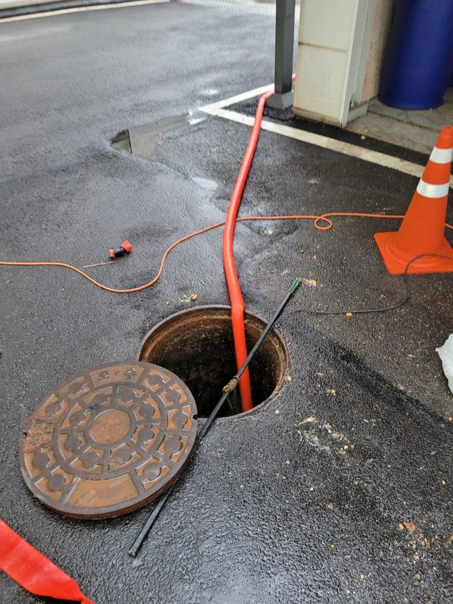
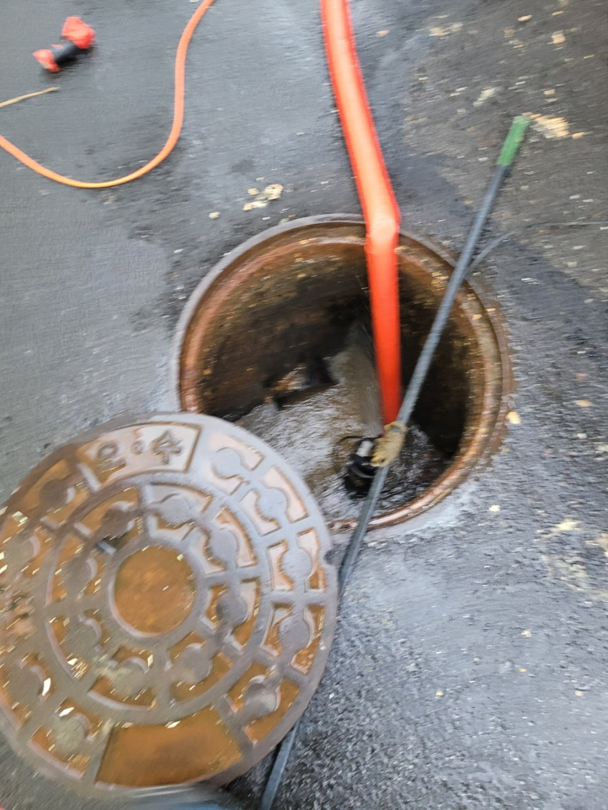
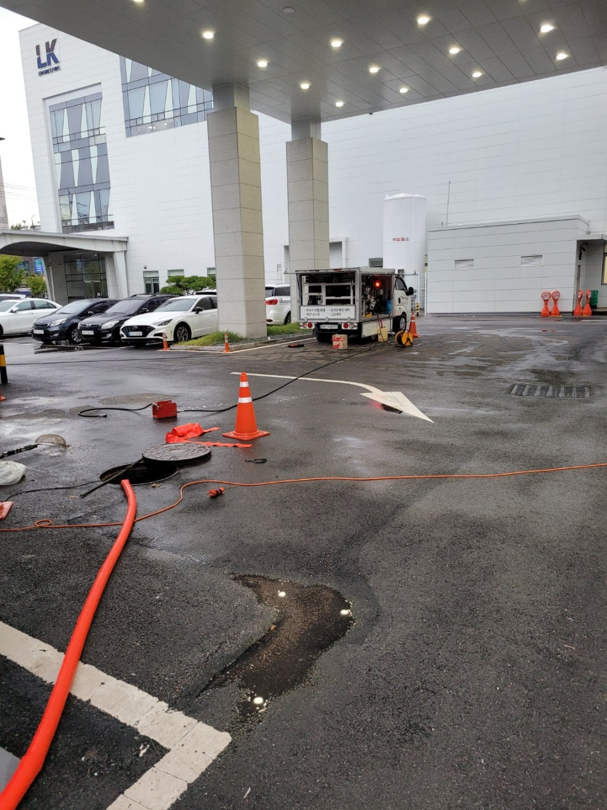
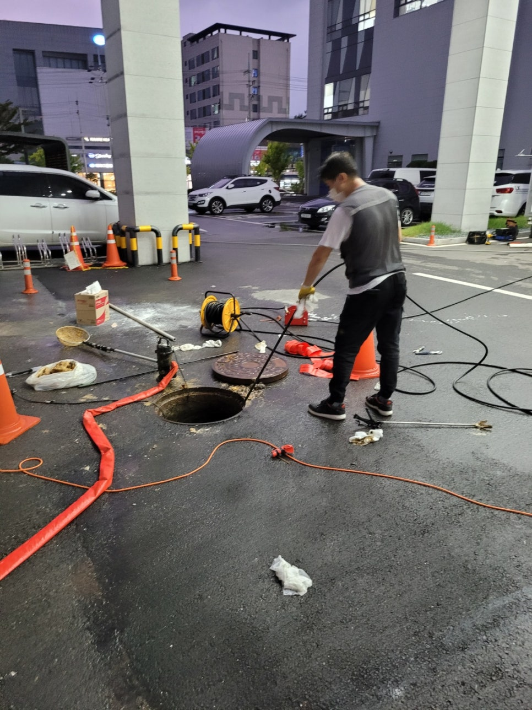
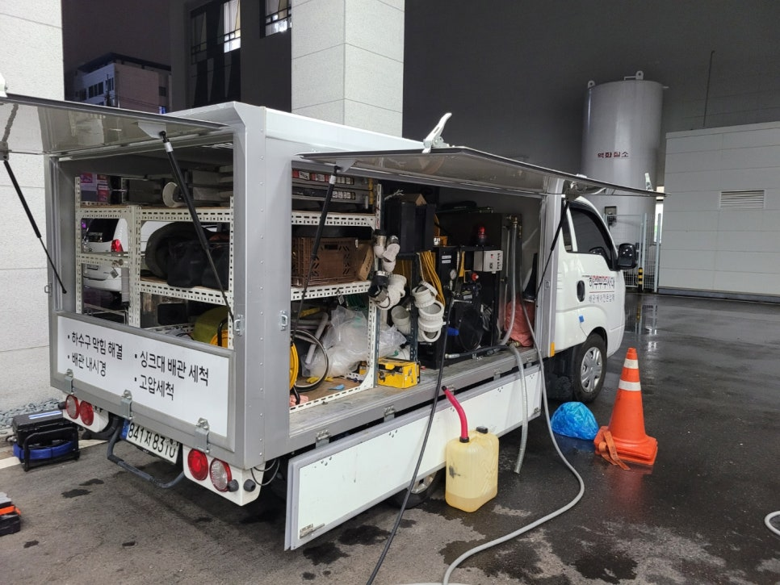
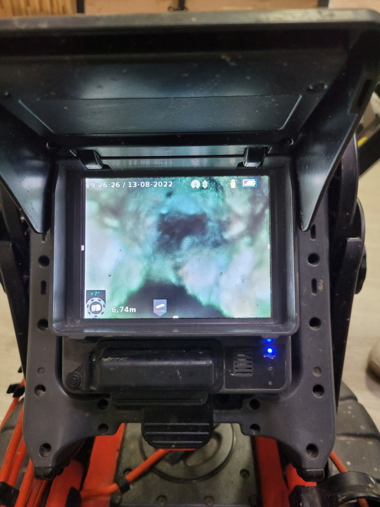

🏠 송탄하수구막힘 서정동 고덕동 고압세척
평택 하수구막힘 전문 시공 후기

📋 작업 개요
- 위치: 평택
- 서비스 유형: 하수구막힘, 배관막힘, 맨홀막힘, 역류해결, 뚫는업체, 배관청소, 고압세척
- 작업 일시: 2022. 9. 18. 20:39
- 업체명: 하수구수사대 (010-5615-2118)
🔍 문제 상황
송탄하수구막힘 서정동 고덕동 고압세척
안녕하세요
하수구배관케어 전문업체
"하수구수사대"입니다.
평택시 송탄에 위치한 공장을 다녀왔는데요
맨홀에서 물이 역류하는 증상이 있어 고객님의
연락을 받고 바로 출동하였습니다.
보통 하수구막힘이 발생하면 배관속에 이물질이 쌓이면서
나타나는 상태라고 알수 있어요.
하지만 배관 내부로 이물질이 가득 차는 이유는 아무래도 일상을 보내며
물과 섞여 들어가는 상황이 자주 있으니
이렇게 막힘 증상이 일어나는 때가 있습니다.
그렇지만 하수구막힘 증상이 나타났을때에는 대부분 혼자 힘으로

🔎 원인 분석
💡 전문가 진단: 정밀 진단 장비를 사용하여 슬러지의 고착 여부를 판명하고 타격/세척 작업을 실시했습니다.
고쳐보려고 하는데요. 하지만 심하게 막힘 경우 업체의 도움을 받아야해요.
맨홀이 가득 물이 차있어 배관이 보이지 않아 물을 먼저
빼내는 작업을 해주었습니다. 여기 오수맨홀은 하수배관도
연결되에 오하수모두 지나가는 곳인데 식당 배관에
이곳으로 지나가고있어 기름덩어리가 많이 있었답니다.
그러다 보니 화장실에서도 막힘 증상이 있었고 물을
사용하면 맨홀에서 역류하는 증상이 나타났어요.
공장건물이기 때문에 배관크기도 200미리로 큰편이였고
배관도 길기 때문에 고압세척 방식이 적합한 장비입니다.
대부분 공용배관은 100미리정도를 많이 사용하지만
사용양이 많은 공장이나 빌딩은 좀더 큰 배관으로 하는것이
좋아요.
고압세척은 배관에 붙어있는 이물질들은 물을 고압으로 분사시켜

🔧 작업 과정
끌어내는 방식인데요 배관에 무리를 전혀 주지 않기 때문에
최고의 장비입니다. 기름때는 배관 윗부분에 붙어있기 때문에
스프링장비같은 뚫는 장비로는 기름때를 모두 제거할수 없기때문에
또 막힐 확률이 높은 편입니다. 더군다나 배관이 클수록 더 그렇답니다.
내시경카메라를 통해 배관내부를 확인할수 있었는데
위 사진처럼 배관90%이상이 기름으로 막혀있었어요.
한번생긴 기름은 제거해주지 않는이상 자연적으로 없어지지
않아요. 약품을 붓는다해도 이미 딱딱해진 기름덩어리는
제거되지 않고 오히려 기름이 조금씩 무너진것들이
더 막히게하는 원인이 되기도 한답니다.
이처럼 큰배관이 막혔다는것은 일시적인 단순막힘보다는
배관에 기름이 상당히 많다고 봐야하기 때문에
완벽한 작업이 필요합니다. 최신장비를 보유하고 있는
저희 하수구수사대는 모든 현장을 완벽하게 해결해드리고
있답니다.
항상 완벽하게 작업하고 AS가 나지않게 하는것이
저의 철칙이기도 한데요 이는 고객님뿐만아니라
저에게도 큰 자부심이 된답니다. 하지만 AS부분이 의심된다면
무조건 달려가 확인을 해드리고 있으니 안심하고 맡겨주십니요.
고압세척으로 해결하고 나면 내시경카메라를 통해 배관상태도 확인하는데요
위사진처럼 깨끗하게 청소가 된걸 확인하면서 보람을 느낀답니다.


✅ 작업 완료
AS를 보증해드리는 부분도 이처럼 눈으로 확인하기때문에
더욱더 자신이 있습니다.
갑작스러운 하수구막힘으로 고민중이시라면
언제든지 "하수구수사대"로 연락주시면
속시원하게 해결해 드리겠습니다.
경기도 평택시 고덕중앙로 322 4층 129호




⚠️ 하수구 배관 막힘 예방 및 관리 가이드
- ✅ 머리카락, 비닐, 물티슈 등 물에 분해되지 않는 이물질은 하수구 유입을 절대 금지해 주세요.
- ✅ 하수구 거름망을 씌우고 모여진 이물질은 주기적으로 쓰레기통에 바로 비워주셔야 합니다.
- ✅ 배관 노후가 심할 경우 이물질이 더 쉽게 걸리므로 주기적인 배관 세척(고압세척 등)을 권장합니다.
- ✅ 작업 후 1년 이내 재발 시 하수구수사대에서 무상 A/S 보증 서비스를 제공합니다.
💡 핵심 정리
- 확실한 장비 작업(내시경 점검 및 샤프트 스케일링)으로 원인을 뿌리 뽑습니다.
- 작업 후 1년 이내에 동일한 부위 재발 시 100% 무상 A/S 서비스를 보장합니다.
- 서울 · 경기 · 인천 전 지역에 24시간 언제든 긴급 출동할 수 있도록 항시 대기 중입니다.
❓ 자주 묻는 질문 (FAQ)
🚨 평택 하수구막힘 문제로 고민이신가요?
정확한 원인 진단과 확실한 시공으로 재발 없는 해결을 약속드립니다.
24시간 긴급 출동 | 서울 · 경기 · 인천 전지역 | 1년 내 재발 시 무상 A/S